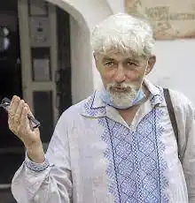

Анатолій Васильович Горовий — український історик, прозаїк і поет, художник, педагог. Народився 1 травня 1951 в селі Йосипівка на той час Узинського, а нині Білоцерківського району Київської області. Закінчив Городищенську середню школу № І ім. Т. Г. Шевченка, в 1969–1974 рр. навчався на історичному факультеті Київського державного університету імені Т. Г. Шевченка, отримав диплом історика, викладача історії та суспільствознавства.
Працював вчителем у школах, профтехучилищах, вихователем, референтом з методичної роботи Всеросійського товариства "Знання", в міському клубі туристів — інструктором зі спелеотуризму.
В 1990-ті роки був одним із тих, хто започаткував Києво-Печерський гуманітарний колегіум, і став його першим ректором. Створив творче об'єднання "Отава" на початку XXI ст., працював старшим науковим співробітником Києво-Печерського історико-культурного заповідника. З 2019 року Анатолій Васильович працює у відділі бібліотечних комунікацій Публічної бібліотеки імені Лесі Українки для дорослих м. Києва. Він є автором двох прозових книг: "Доки шабля в руці" — химерна повість для дітей та дорослих, "Аліпій — перший руський іконописець" — повість про події XII ст. У 2009 р. вийшла збірка поезій "Там, за обрієм, коротка мить". У 2014 році вийшла друком книжка Анатолія Горового "Забутий митрополит Сильвестр Косов", в 2017 та 2019 рр. побачили світ збірки поезій "А воля – такий гіркий трунок" та "В розбрід через брід". В 2008 році відбулися перші персональні виставки живописних робіт Анатолія Горового. Пише в стилі експресіонізму. А. Горовий — один із творців принципів сучасної музейної педагогіки. Автор ідеї сприйняття молодим поколінням музейних парадигм через власні творчі зусилля. У 2009 році за сценарієм А. Горового "Стріла заздрощів" був знятий експериментальний художньо-документальний фільм про лікаря-ченця Агапіта. В цьому фільмі А. Горовий зіграв головну роль. Починаючи з 2009 року за сценарієм Анатолія Горового та режисера Богдана Браги на телеканалі "ГЛАС" вийшли документальні фільми: "Агапіт. Стріла заздрощів – поєдинок"; "Князь – інок. Микола Святоша"; "Канівський хорал Любов Міненко"; "Що може художник Валерій Франчук?"; "Сергей Урусевский"; "Художник і час. Іван-Валентин Задорожний"; "Вартові міражів". Джерело: https://lukl.kyiv.ua/pro-biblioteky/horovyi-anatolii-197/